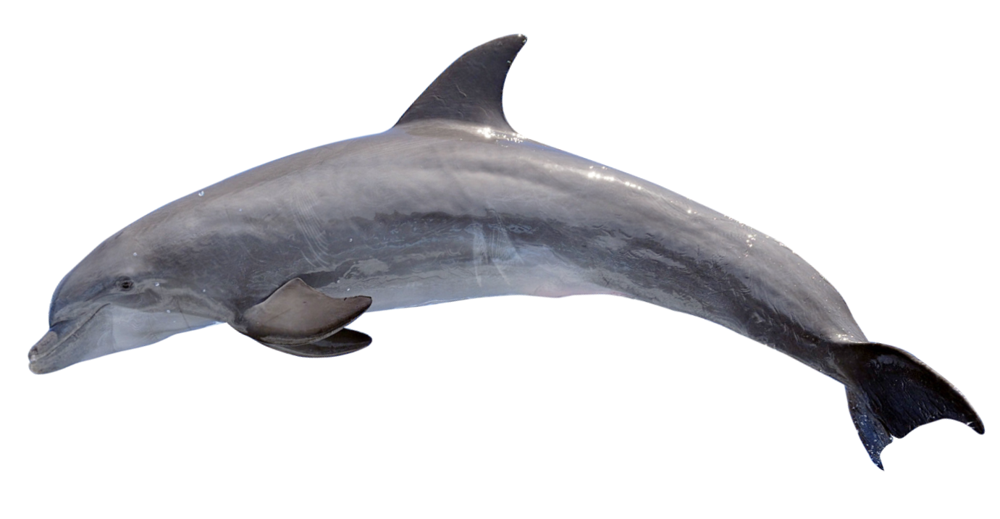
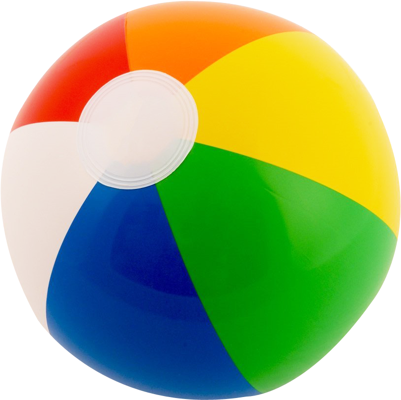
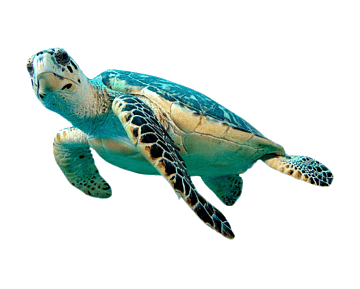
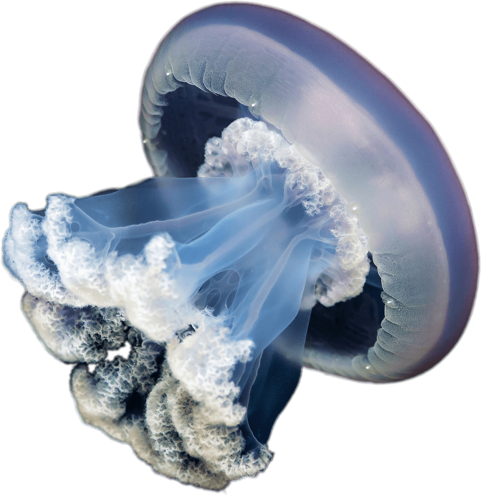
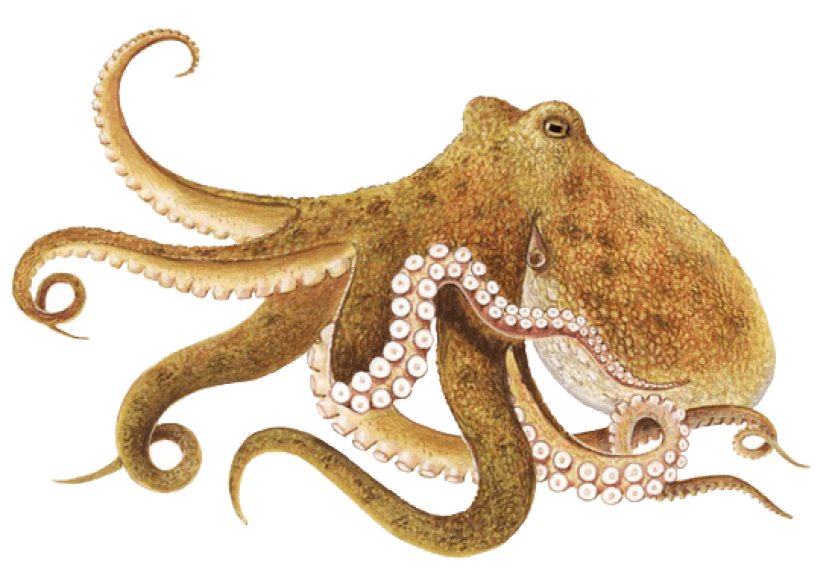

Marine inhabitants
5 fun facts about dolphins

#1 Dolphins seem to use toxic pufferfish to get high
#2 They dive up to 1,000 feet Dolphins are known to be great divers. Being creatures of the sea, they can dive up to 1,000 feet underwater.
#3 Dolphins have 2 stomachs One is used for storage of food and the other is used for digestion.
#4 There are around 40 species of dolphins While the majority of them spend their lives in saltwater, many can survive just fine in freshwater. The smallest of their kind is 3-4 feet long, while the largest is 30 feet!
#5 Killer whales are the biggest kind of dolphin Opposite to their name, Killer Whales belong to the dolphin family. Killer Whales, reaching up to a length of 30 feet, are the biggest of their kind.
5 fun facts about sea turtles

#1 They think jellyfish are delicious. Leatherbacks and hawkbill turtles feed on jellyfish and keep their populations in check. Plastic looks like jellyfish when it's floating in the water and that's why so many turtles die from ingesting plastic—they were going for a tasty snack.
#2 They're the oceans' lawnmowers. Green sea turtles have a more plant-based diet and eat seagrass. By keeping seagrass short, they prevent it from getting tall and harming other marine creatures.
#3 Green turtles can hold their breath underwater for as long as five hours. To do this, they slow their heart rate to up to nine minutes in between heart beats to conserve oxygen!
#4 The leatherback turtle is the largest of all living turtles and can grow to weigh as much as 900 kg.
#5 They live to around 100 years, which is also roughly the number of eggs female sea turtles lay when they nest.
5 fun facts about sharks
#1 Sharks have special electroreceptor organs. Sharks have small black spots near the nose, eyes, and mouth. These spots are the ampullae of Lorenzini – special electroreceptor organs that allow the shark to sense electromagnetic fields and temperature shifts in the ocean.
#2 Most sharks have good eyesight. Most sharks can see well in dark lighted areas, have fantastic night vision, and can see colors. The back of sharks’ eyeballs have a reflective layer of tissue called a tapetum. This helps sharks see extremely well with little light.
#3 Shark skin feels similar to sandpaper. Shark skin feels exactly like sandpaper because it is made up of tiny teeth-like structures called placoid scales, also known as dermal denticles. These scales point towards the tail and help reduce friction from surrounding water when the shark
#4 Sharks have been around a very long time. Based on fossil scales found in Australia and the United States, scientists hypothesize sharks first appeared in the ocean around 455 million years ago.
#5 Sharks can go into a trance. When you flip a shark upside down they go into a trance like state called tonic immobility. This is the reason why you often see sawfish flipped over when our scientists are working on them in the water.
5 fun facts about octopuses

#1 They have better vision than humans.
#2 Octopus change their color through their muscles.
#3 Octopuses can regrow their arm if they lose one.
#4 Octopus has decentralized brains.
#5 All octopuses have venom.